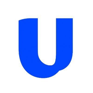

Unifold routes around both.
Several ramps and several bridges sit behind one SDK. A weak geo or a stalled bridge reroutes with no code change.

UnifoldReroutes around weak geos and stalled bridges, native on web and mobile, live in ten lines of code.
Most teams wire up a single ramp and a single bridge, then live with the gaps.
Several ramps and several bridges sit behind one SDK. A weak geo or a stalled bridge reroutes with no code change.
Want more geographies? Integrate another ramp, and another after that.
With one bridge, an outage becomes your outage, and users wait on funds in flight.
The deposit starts in your app, Unifold picks the route, and a stalled bridge is skipped.
Other approaches each solve one slice. Unifold covers the whole path natively.
| What matters | Unifold | A single ramp | A single bridge | Other deposit platforms |
|---|---|---|---|---|
| Integration | About ten lines, one SDK | One integration per ramp | One integration per bridge | One SDK, fewer platforms |
| Geo coverage | Add geos by routing, no new integration | Strong in some geos, weaker in others | Not applicable | Varies |
| Reliability | Reroutes around a weak ramp or a stalled bridge | Fails with that one provider | Transactions can stick when it goes down | Often one routing path |
| SDK breadth | React, React Native, Swift, Kotlin, Flutter, Svelte | Widget or web first | API only | Fewer SDKs |
| Mobile | Native on iOS, Android, React Native and Flutter | Web view or redirect | Not applicable | Mostly web first |
| Ramp flow control | Headless option, you own the interface | Limited | Not applicable | Limited |
| Payment methods | Bank deposits and withdrawals, Cash App, Apple Pay, card, wallets, exchanges | A fixed set per provider | Crypto only | Varies |
| Custom needs | Tell us what you need and we scope it into the widget | Whatever the provider offers | Not applicable | Varies |
| Operations | Webhooks, treasury, withdrawals, checkout | Not included | Not included | Partial |
Users pay by bank transfer, card, Apple Pay, Cash App, a wallet or an exchange account, in any token on any chain. Funds land where you configure.
Geo-aware routing across multiple ramps and bridges, so success does not depend on one provider.
Deposits live inside your UI with no redirects, on web and mobile.
Run the ramp flow through your own interface and keep complete control of the experience.
Signed and retried webhooks, testnet mode, geo controls, treasury sweeps and spend policies, plus withdrawals and checkout.
One integration replaces a ramp, a bridge and a treasury project. Your team stays on your product.
Bank rails, Cash App, cards, wallets and exchanges, all inside one widget.
Let users fund their account straight from a bank and cash out back to it. Both directions run through the same integration as everything else.
Users fund with Cash App inside the same deposit modal, with no redirects and no separate integration.
Tell us what you are scoping. We will scope it out with you and integrate it into the widget.
Truly native on iOS and Android, plus React Native and Flutter, so deposits are built into your app and not bolted on.
Tell us about your product, volume and geos. We will show you the flow running in your app.
Try the live demo